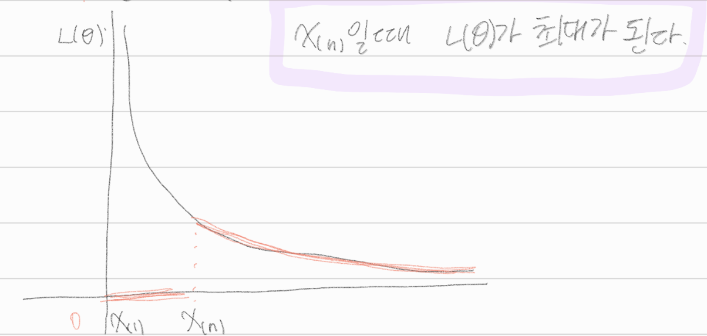
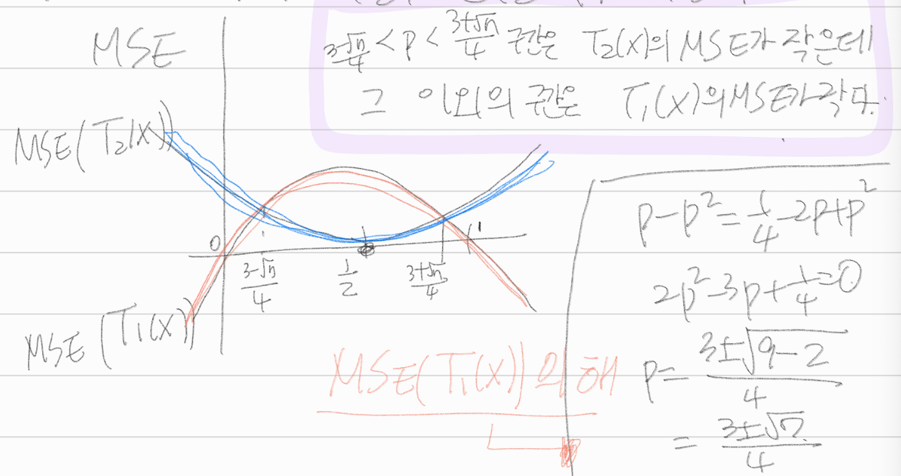

4장 모수의 추정
2.
\(X_1, \dots, X_n\)이 확률밀도함수 \(f_X(x:\theta) = (\theta + 1) x^{\theta},0<x<1\)로부터의 랜덤표본이라고 할 때, 적률을 이용한 \(\theta\)의 추정량이 \(\frac{2\bar{X}_n-1}{1-\bar{X}_n}\) 이 됨을 보여라.
answer
\(\mu = E(X) = \int^{\infty}_{-\infty}xf(x:\theta) dx = \int^{1}_0 (\theta + 1) x^{\theta +1 } dx = (\theta+1)[\frac{x^{\theta+2}}{\theta+2}]^1_0 = \frac{\theta + 1}{\theta + 2}\)
\(\mu_1 = \frac{\theta + 1}{\theta + 2} \sim \bar{X} = \frac{\theta + 1}{\theta + 2}\)
\(\bar{X} \theta + 2 \bar{X} = \theta +1\)
\(\hat{\theta}(1-\bar{X}) = 2\bar{X} - 1\)
\(\hat{\theta} = \frac{2\bar{X} - 1}{1-\bar{X}}\)
4.
\(X_1, \dots X_n\)이 \(U(0,\theta)\)로부터의 랜덤표본이라고 할 때, 적률을 이용한 \(\theta\)의 추정량을 구하고, 최대가능도 추정량과 비교하라.
answer
\(\mu_1 = E(X) = \frac{a+b}{2} = \frac{\theta}{2}\)
\(\hat{\theta}^{MME} = 2\mu_1 = 2\bar{X}\)
\(f(x) = \frac{1}{\theta} I(0<x<\theta)\)
\(L(\theta) = f(x_1 | \theta) \dots f(X_n | \theta) = \frac{1}{\theta}I(0<x_1< \theta) \dots \frac{1}{\theta} I(0<X_n< \theta) = \frac{1}{\theta^n} I(0<x_{(1)}, x_{(n)} < \theta)\)
\(x_{(n)}\)일 때, \(L(\theta)\)가 최대가 된다.

\(\hat{\theta}^{MME}\)와 \(\hat{\theta}^{MLE}\) 모두 비편향 추정량이 아니다.
\(\hat{\theta}^{MME}\)에서는 \(\theta\)가 \(2\bar{X}\)가 될 때 기댓값이 최대가 되고, \(\hat{\theta}^{MLE}\)에서는 \(\theta\)가 \(X_{(n)}\)이 될 때, \(L(\theta)\)가 최대가 되었다.
7.
확률변수 \(X\)의 분포가 \(P(X=1)=\theta^2\), \(P(X=2) = 2\theta(1-\theta)\), \(P(X=3)=(1-\theta)^2\)(단, \(0<\theta<1\))이라고 하자. 이제 세 개의 관찰값 \(2,2,3\)을 얻었을 때, 모수 \(\theta\)의 최대가능도 추정값을 구하라.
answer
\(f(x) = x\theta^{3-x}(1-\theta)^{x-1}\)
\(L(\theta) = 2\theta (1-\theta) \times 2\theta(1-\theta)\times (1-\theta)^2 = 4\theta^2 (1-\theta)^4\)
\(L'(\theta) = 8\theta(1-\theta)^4 - 16\theta^2 (1-\theta)^3 = 8\theta(1-\theta)^3(1-\theta - 2\theta) = 8\theta(1-\theta)^3(1-3\theta) = 0\)
\(\theta = \frac{1}{3}\)일때, \(L(\theta)\)가 최대이다.
\(\therefore L(\theta|2,2,3)\)에서의 모수 \(\theta\)의 최대가능도 추정값은 \(\frac{1}{3}\)
14.
\(X_1,\dots,X_n\) 이 평균이 \(\mu\)이고, 분산이 \(\sigma^2\)인 분포로부터 얻은 랜덤표본이라고 할 때 모평균 \(\mu\)가 알려져 있다면, \(\frac{1}{n}\sum(X_i - \mu)^2\)이 \(\sigma^2\)의 비편향 추정량임을 보여라.
answer
\(E(\frac{1}{n}\sum(X_i - \mu)^2) = \frac{n\sigma^2}{n} = \sigma^2\)
15.
\(X \sim U(0,\theta)\)일때, \(\theta^2\)의 비편향추정량을 구하라.
answer
\(E(X) = \frac{\theta}{2}\), \(var(X) = \frac{\theta^2}{12}\)
\(E(X^2) = var(X) + (E(X))^2 = \frac{\theta^2}{12}+\frac{\theta^2}{4} = \frac{\theta^2}{3}\)
\(\hat{\theta}^2 = 3X^2\)
19.
\(X \sim Bernoulli(p)\)일때, \(p\)에 대한 추정량으로 \(T_1(x) = X\)와 \(T_2(X) = \frac{1}{2}\)을 고려하였다.
(1)
\(T_1(X)\)와 \(T_2(X)\)의 비평향성을 점검하라.
answer
\(E(T_1(X)) = E(X) = p \to T_1(X)\) 비편향성 만족
\(E(T_2(X)) = E(\frac{1}{2}) = \frac{1}{2} \to T_2(X)\) 비편향성 불만족
(2)
\(T_1(X)\)와 \(T_2(X)\)의 평균제곱오차를 비교하라.
answer
\(MSE(T_1(X)) = MSE(X)\)
\(= E(X-P)^2 = E(X^2 - 2PX + P^2)\)
\(= P(1-P) + P^2 -2P^2 + P^2 = P-P^2+P^2-2P^2+P^2 = P-P^2 = P(1-P)\)
\(MSE(T_2(X)) = MSE(\frac{1}{2} - E(\frac{1}{2} - P)^2) = (\frac{1}{2}-P)^2\)
\(\star\)
\(P-P^2 = \frac{1}{4}-2P+P^2\)
\(2P^2 -3P+\frac{1}{4} = 0\)
\(P = \frac{3 \pm \sqrt{9-1}}{4} = \frac{3 \pm \sqrt{7}}{4}\)

20.
\(X_1,X_2,\dots,X_n\)이 \(EXP(\lambda)\)로부터 얻은 랜덤표본이라고 하자, 모수 \(\lambda\)에 대한 추정량으로 \(\hat{\lambda_1} = \bar{X}_n\)과 \(\hat{\lambda}_2 = \frac{n\bar{X}_n }{ (n+1)}\)을 비교할 때,
(1)
\(\hat{\lambda}_1\)과 \(\hat{\lambda}_2\)의 분산을 구하라.
answer
\(E(X_i) = \lambda, Var(X_i) = \lambda^2\)
\(E(\hat{\lambda}_1) = E(\bar{X}) = \lambda \to\), 비편향추정량이다.
\(Var(\hat{\lambda}_1) = E(\bar{X}) = \frac{\lambda^2}{n}\)
\(E(\hat{\lambda_2}) = E(\frac{n\bar{X}_n}{n+1}) = \frac{n}{n+1}E(\bar{X}_n) = \frac{n}{n+1}\lambda \to\)비편향 추정량이 아니다., 즉, 분산에 bias존재
\(Var(\hat{\lambda_2}) = Var(\frac{n}{n+1}\bar{X}_n) = E(\frac{n}{n+1}\bar{X} - \lambda)^2\)
\(= E(\frac{n}{n+1} \bar{X} - \frac{n}{n+1} \lambda + \frac{n}{n+1}\lambda -\lambda)^2\)
\(= E(\frac{n}{n+1}(\bar{X}-\lambda) - \frac{1}{n+1}\lambda)^2\)
\(= (\frac{n}{n+1})^2E(\bar{X} - \lambda)^2 + \frac{1}{(n+1)^2}\lambda^2 - \frac{2n}{(n+1)^2}\lambda(\bar{X} - \lambda)\)
\(= (\frac{n}{n+1})^2 \lambda^2 + \frac{1}{(n+1)^2}\lambda^2\)
\(= \frac{n^2+1}{(n+1)^2}\lambda^2\)
(2)
\(\hat{\lambda}_1\)과 \(\hat{\lambda}_2\)의 평균제곱오차를 구하라.
answer
\(MSE(\hat{\lambda}_1) = E(\hat{\lambda}_1 - \lambda)^2 = var(\hat{\lambda}_1) = \frac{\lambda^2}{n}\)
\(\star\) 비편향추정량이라 분산과 일치하는 \(\hat{\lambda}_1\)
\(MSE(\hat{\lambda}_2) = E(\hat{\lambda}_2 - \lambda)^2 = var(\hat{\lambda}_2) + (bias(\hat{\lambda}_2))^2\)
\(\star\) 비편향추정량이 아니라 bias까지 고려해줘야 하는 \(\hat{\lambda}_2\)
\(var(\hat{\lambda}_2) = \frac{n^2+1}{(n+1)^2}\lambda^2\)
\(bias(\hat{\lambda}_2) = E(\hat{\lambda}_2) - \lambda = \frac{n}{n+1}\lambda - \lambda = -\frac{1}{n+1}\lambda\)
\(\star var(\hat{\lambda}_2) + (bias(\hat{\lambda}_2))^2\)
\(= \frac{n^2+1}{(n+1)^2}\lambda^2 + \frac{1}{(n+1)^2}\lambda^2 = \frac{n^2+2}{(n+1)^2}\lambda^2\)